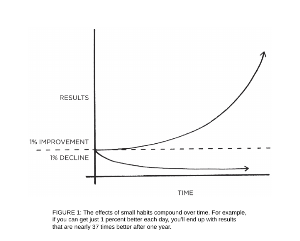

THE FATE OF British Cycling changed one day in 2003 The organization,which was the governing
body for professional cycling in Great Britain,
had recently hired Dave Brailsford as its new performance director. At the
time, professional cyclists in Great Britain had endured nearly one hundred
years of mediocrity. Since 1908, British riders had won just a single gold
medal at the Olympic Games, and they had fared even worse in cycling’s
biggest race, the Tour de France. In 110 years, no British cyclist had ever
won the event.
In fact, the performance of British riders had been so underwhelming
that one of the top bike manufacturers in Europe refused to sell bikes to the
team because they were afraid that it would hurt sales if other professionals
saw the Brits using their gear.
Brailsford had been hired to put British Cycling on a new trajectory.
What made him different from previous coaches was his relentless
commitment to a strategy that he referred to as “the aggregation of marginal
gains,” which was the philosophy of searching for a tiny margin of
improvement in everything you do. Brailsford said, “The whole principle
came from the idea that if you broke down everything you could think of
that goes into riding a bike, and then improve it by 1 percent, you will get a
significant increase when you put them all together.”
Brailsford and his coaches began by making small adjustments you
might expect from a professional cycling team. They redesigned the bikeseats to make them more comfortable
and rubbed alcohol on the tires for a
better grip. They asked riders to wear electrically heated overshorts to
maintain ideal muscle temperature while riding and used biofeedback
sensors to monitor how each athlete responded to a particular workout. The
team tested various fabrics in a wind tunnel and had their outdoor riders
switch to indoor racing suits, which proved to be lighter and more
aerodynamic.
But they didn’t stop there. Brailsford and his team continued to find 1
percent improvements in overlooked and unexpected areas. They tested
different types of massage gels to see which one led to the fastest muscle
recovery. They hired a surgeon to teach each rider the best way to wash
their hands to reduce the chances of catching a cold. They determined the
type of pillow and mattress that led to the best night’s sleep for each rider.
They even painted the inside of the team truck white, which helped them
spot little bits of dust that would normally slip by unnoticed but could
degrade the performance of the finely tuned bikes.
As these and hundreds of other small improvements accumulated, the
results came faster than anyone could have imagined.
Just five years after Brailsford took over, the British Cycling team
dominated the road and track cycling events at the 2008 Olympic Games in
Beijing, where they won an astounding 60 percent of the gold medals
available. Four years later, when the Olympic Games came to London, the
Brits raised the bar as they set nine Olympic records and seven world
records.
That same year, Bradley Wiggins became the first British cyclist to win
the Tour de France. The next year, his teammate Chris Froome won the
race, and he would go on to win again in 2015, 2016, and 2017, giving the
British team five Tour de France victories in six years.
During the ten-year span from 2007 to 2017, British cyclists won 178
world championships and sixty-six Olympic or Paralympic gold medals and
captured five Tour de France victories in what is widely regarded as the
most successful run in cycling history.*
How does this happen? How does a team of previously ordinary athletes
transform into world champions with tiny changes that, at first glance,
would seem to make a modest difference at best? Why do smallimprovements accumulate into such remarkable
results, and how can you
replicate this approach in your own life?
WHY SMALL HABITS MAKE A BIG DIFFERENCE
It is so easy to overestimate the importance of one defining moment and
underestimate the value of making small improvements on a daily basis.
Too often, we convince ourselves that massive success requires massive
action. Whether it is losing weight, building a business, writing a book,
winning a championship, or achieving any other goal, we put pressure on
ourselves to make some earth-shattering improvement that everyone will
talk about.
Meanwhile, improving by 1 percent isn’t particularly notable—
sometimes it isn’t even noticeable—but it can be far more meaningful,
especially in the long run. The difference a tiny improvement can make
over time is astounding. Here’s how the math works out: if you can get 1
percent better each day for one year, you’ll end up thirty-seven times better
by the time you’re done. Conversely, if you get 1 percent worse each day
for one year, you’ll decline nearly down to zero. What starts as a small win
or a minor setback accumulates into something much more.
1% BETTER EVERY DAY
1% worse every day for one year. 0.99365 = 0.03
1% better every day for one year. 1.01365 = 37.78

Habits are the compound interest of self-improvement. The same way
that money multiplies through compound interest, the effects of your habits
multiply as you repeat them. They seem to make little difference on any
given day and yet the impact they deliver over the months and years can be
enormous. It is only when looking back two, five, or perhaps ten years later
that the value of good habits and the cost of bad ones becomes strikingly
apparent.
This can be a difficult concept to appreciate in daily life. We often
dismiss small changes because they don’t seem to matter very much in the
moment. If you save a little money now, you’re still not a millionaire. If you
go to the gym three days in a row, you’re still out of shape. If you study
Mandarin for an hour tonight, you still haven’t learned the language. Wemake a few changes, but the results
never seem to come quickly and so we
slide back into our previous routines.
Unfortunately, the slow pace of transformation also makes it easy to let a
bad habit slide. If you eat an unhealthy meal today, the scale doesn’t move
much. If you work late tonight and ignore your family, they will forgive
you. If you procrastinate and put your project off until tomorrow, there will
usually be time to finish it later. A single decision is easy to dismiss.
But when we repeat 1 percent errors, day after day, by replicating poor
decisions, duplicating tiny mistakes, and rationalizing little excuses, our
small choices compound into toxic results. It’s the accumulation of many
missteps—a 1 percent decline here and there—that eventually leads to a
problem.
The impact created by a change in your habits is similar to the effect of
shifting the route of an airplane by just a few degrees. Imagine you are
flying from Los Angeles to New York City. If a pilot leaving from LAX
adjusts the heading just 3.5 degrees south, you will land in Washington,
D.C., instead of New York. Such a small change is barely noticeable at
takeoff—the nose of the airplane moves just a few feet—but when
magnified across the entire United States, you end up hundreds of miles
apart.*
Similarly, a slight change in your daily habits can guide your life to a
very different destination. Making a choice that is 1 percent better or 1
percent worse seems insignificant in the moment, but over the span of
moments that make up a lifetime these choices determine the difference
between who you are and who you could be. Success is the product of daily
habits—not once-in-a-lifetime transformations.
That said, it doesn’t matter how successful or unsuccessful you are right
now. What matters is whether your habits are putting you on the path
toward success. You should be far more concerned with your current
trajectory than with your current results. If you’re a millionaire but you
spend more than you earn each month, then you’re on a bad trajectory. If
your spending habits don’t change, it’s not going to end well. Conversely, if
you’re broke, but you save a little bit every month, then you’re on the path
toward financial freedom—even if you’re moving slower than you’d like.
Your outcomes are a lagging measure of your habits. Your net worth is a
lagging measure of your financial habits. Your weight is a lagging measureof your eating habits. Your
knowledge is a lagging measure of your learning
habits. Your clutter is a lagging measure of your cleaning habits. You get
what you repeat.
If you want to predict where you’ll end up in life, all you have to do is
follow the curve of tiny gains or tiny losses, and see how your daily choices
will compound ten or twenty years down the line. Are you spending less
than you earn each month? Are you making it into the gym each week? Are
you reading books and learning something new each day? Tiny battles like
these are the ones that will define your future self.
Time magnifies the margin between success and failure. It will multiply
whatever you feed it. Good habits make time your ally. Bad habits make
time your enemy.
Habits are a double-edged sword. Bad habits can cut you down just as
easily as good habits can build you up, which is why understanding the
details is crucial. You need to know how habits work and how to design
them to your liking, so you can avoid the dangerous half of the blade.
WHAT PROGRESS IS REALLY LIKE
Imagine that you have an ice cube sitting on the table in front of you. The
room is cold and you can see your breath. It is currently twenty-five
degrees. Ever so slowly, the room begins to heat up.
Twenty-six degrees.
The ice cube is still sitting on the table in front of you.
Twenty-nine degrees.
Still, nothing has happened.
Then, thirty-two degrees. The ice begins to melt. A one-degree shift,
seemingly no different from the temperature increases before it, has
unlocked a huge change.
Breakthrough moments are often the result of many previous actions,
which build up the potential required to unleash a major change. This
pattern shows up everywhere. Cancer spends 80 percent of its life
undetectable, then takes over the body in months. Bamboo can barely be
seen for the first five years as it builds extensive root systems underground
before exploding ninety feet into the air within six weeks.
Similarly, habits often appear to make no difference until you cross a
critical threshold and unlock a new level of performance. In the early and
middle stages of any quest, there is often a Valley of Disappointment. You
expect to make progress in a linear fashion and it’s frustrating how
ineffective changes can seem during the first days, weeks, and even months.
It doesn’t feel like you are going anywhere. It’s a hallmark of any
compounding process: the most powerful outcomes are delayed.This is one of the core reasons why it is so
hard to build habits that last.
People make a few small changes, fail to see a tangible result, and decide to
stop. You think, “I’ve been running every day for a month, so why can’t I
see any change in my body?” Once this kind of thinking takes over, it’s easy
to let good habits fall by the wayside. But in order to make a meaningful
difference, habits need to persist long enough to break through this plateau
—what I call the Plateau of Latent Potential.
If you find yourself struggling to build a good habit or break a bad one,
it is not because you have lost your ability to improve. It is often because
you have not yet crossed the Plateau of Latent Potential. Complaining about
not achieving success despite working hard is like complaining about an ice
cube not melting when you heated it from twenty-five to thirty-one degrees.
Your work was not wasted; it is just being stored. All the action happens at
thirty-two degrees.
When you finally break through the Plateau of Latent Potential, people
will call it an overnight success. The outside world only sees the most
dramatic event rather than all that preceded it. But you know that it’s the
work you did long ago—when it seemed that you weren’t making any
progress—that makes the jump today possible.
It is the human equivalent of geological pressure. Two tectonic plates
can grind against one another for millions of years, the tension slowly
building all the while. Then, one day, they rub each other once again, in the
same fashion they have for ages, but this time the tension is too great. An
earthquake erupts. Change can take years—before it happens all at once.
Mastery requires patience. The San Antonio Spurs, one of the most
successful teams in NBA history, have a quote from social reformer Jacob
Riis hanging in their locker room: “When nothing seems to help, I go and
look at a stonecutter hammering away at his rock, perhaps a hundred times
without as much as a crack showing in it. Yet at the hundred and first blow
it will split in two, and I know it was not that last blow that did it—but all
that had gone before.”